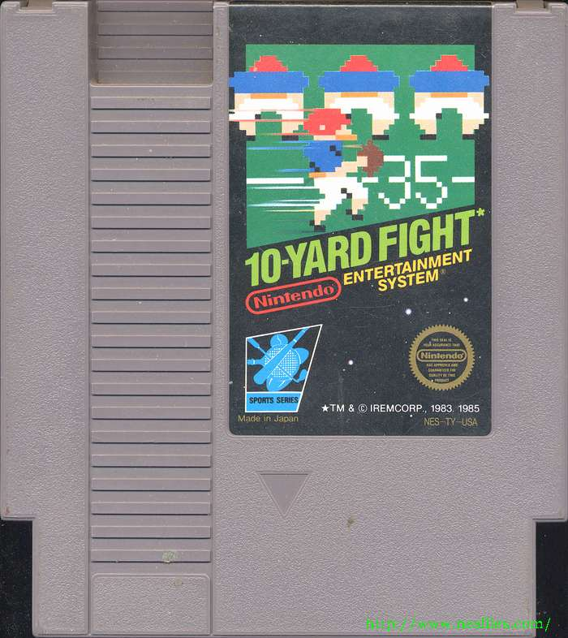

10-Yard Fight 
10-Yard Fight is a 1983 American football arcade game that was developed and published in Japan by Irem and published in the United States by Taito and in Europe by Electrocoin. It is the first slightly realistic American football video game ever developed and released
The game is viewed in a top-down perspective and is vertical scrolling. The player does not select plays for either offense or defense. On offense, the player simply receives the ball upon the snap and either attempt to run with the quarterback, toss the ball to a running back, or throw the ball to the one long distance receiver - basically the option offense. On defense, the player chooses one of two players to control, and the computer manipulates the others. The ball can also be puntedor a field goal can be attempted.
10-Yard Fight has five levels of difficulty; from easiest to most difficult:high school, college, professional, playoff, and Super Bowl. If the player wins both halves of an "accelerated real time" 30-minute half at an easier level, the player advanced to the next level of difficulty, like a crudely designed career mode. The arcade game was later ported to the Family Computer by Irem first in Japan, and later published in North America and Europe by Nintendo in 1985 for the Nintendo Entertainment System

Baseball
Baseball is a 1983 video game from Nintendo, one of the first launch titles for the Nintendo Family Computer. In 1985, the game was featured prominently amongst the 18 titles at the Manhattan test market launch of the Nintendo Entertainment System, being demonstrated on a large projector screen by real Major League Baseball players. The game's launch position and the universal appeal of its namesake sport are said to have made Baseball a key to the NES's overall success, and an important piece of Nintendo history. As in real baseball, the object of the game is to score the most runs. The game supports one player versus a computer opponent, or two players. Each player can select from one of six teams.
Though lacking a license to give official team names,their initials in the game are meant to represent the names of real teams from the Japanese Central League or the American Major League Baseball in their respective regions. In gameplay, the only practical difference between the teams is the uniform colors. The title screen music of this NES title also appears as the title screen music of some of Nintendo's other NES Sports series titles such as Pro Wrestling. A slightly altered version of it appears at the title screen of the Nintendo's NES title, Volleyball. The home run music appears as the victory tune in both Punch-Out!!and Super Punch-Out!! arcade games.
Clu-Clu Land
Clu Clu Land is an arcade and Nintendo Entertainment System game released in 1984 in Japan, later released in North America in 1985 as a Nintendo Entertainment System launch title, and in Europe in 1987. It was released for the Wii Virtual Console in North America in 2008 and in Europe and Japan in 2009, for the Nintendo 3DS Virtual Console in Japan in 2013 and in North America and Europe in 2014, and for the Wii U Virtual Console in 2013. In Clu Clu Land, the player is a bubble fish named Bubbles who swims around in a maze trying to uncover all the golden Ingots.
Clu Clu Land's story starts with a type of sea urchin, the Unira, stealing all of the treasures in the underwater kingdom of Clu Clu Land. Bubbles, the hero, sets out to retrieve the treasure. The object of the game is to uncover all the gold bars called Ingots in each stage while avoiding the Unira and Black Holes. Ingots usually form a shape such as a heart or a mushroom. The only way Bubbles can turn around to change directions is by means of Turning Posts located throughout the stages. Bubbles can stun the Unira by using a Sound Wave. When they are stunned, Bubbles can push them into a wall to get rid of them and receive points. If Bubbles is hurt by the Unira, she will lose a life. A life is also lost when Bubbles falls into a Black Hole, or when time runs out. The game ends if Bubbles has lost all her lives. In later levels, the player must pass over the Ingots twice to uncover them, and passing over them in later levels will re-bury them.
Duck Hunt 
Duck Hunt is a light gun shooter video game developed and published by Nintendo for the Nintendo Entertainment System (NES) video game console. First released in Japan on April 21, 1984, it was later released on October 18, 1985 in North America as a launch game for the NES, and on August 15, 1987 in Europe. The game was released as a Virtual Console title for the Wii U in 2014.
In Duck Hunt, players use the NES Zapper to shoot ducks that appear on the television screen. The ducks appear one or two at a time, and the player is given three shots to shoot them down. The player receives points upon shooting each duck. If the player shoots the required number of ducks in a single round, the player will advance to the next round; otherwise, the player will receive a game over.
The game initially received few reviews, but was given mild critical praise and elicited a positive gamer reaction. Prior to the NES version, Nintendo also made a Duck Hunt game based on Laser Clay Shooting System released in 1976.The game would later be a pack-in game, being a dual game pack with this game and Super Mario Bros., and later a triple game with the same two games plus World Class Track Meet. Duck Hunt is a shooter game in which the objective is to shoot moving targets on the television screen in mid-flight. The game is played from a first-person perspective and requires the NES Zapper light gun, which the player aims and fires at the screen. Each round consists of a total of ten targets to shoot. Depending on the game mode the player selects prior to beginning play, one or two targets will appear on the screen at any given time and the player has three shots, or attempts, to hit them before they disappear.
The player is required to successfully shoot a minimum number of targets in order to advance to the next round; failure will result in a game over. The difficulty increases as the player advances to higher rounds; targets will move faster and the minimum number of targets to shoot will increase. The player receives points upon shooting a target and will also receive bonus points for shooting all ten targets in a single round. Duck Hunt keeps track of the players' highest score for all games played in a single session; it is lost, however, upon shutting the game off.
Duck Hunt has three different game modes to choose from. In "Game A" and "Game B", the targets are flying ducks in a woodland area, and in "Game C" the targets are clay pigeons that are fired away from the player's perspective into the distance. In "Game A", one duck will appear on the screen at a time while in "Game B" two ducks will appear at a time. "Game A" allows a second player to control the movement of the flying ducks by using a normal NES controller. The gameplay starts at Round 1 and may continue up to Round 99. If the player completes Round 99, he or she will advance to Round 0, which is a kill screen (in "Game A") where the game behaves erratically, such as targets that move haphazardly or don't appear at all, and eventually ends.
Excitebike
Excitebike is a motocross racing video game franchise made by Nintendo. It debuted as a game for the Famicom in Japan in 1984 and as a launch title for the NES in 1985. It is the first game of the Excite series, succeeded by its direct sequel Excitebike 64, its spiritual successors Excite Truck and Excitebots: Trick Racing, and the WiiWare title Excitebike: World Rally. 3D Classics: Excitebike, a 3D remake of the original game, was free for a limited time to promote the launch of the Nintendo eShop in June 2011, and has since been available for $5.99.
Whether the player chooses to race solo or against computer-assisted riders, they race against a certain time limit. The goal is to qualify for the Excitebike (the championship) race by coming in at third place or above in the challenge race (preliminary race). The times to beat are located on the stadium walls (for first place) and in the lower left corner (for third place). In any race, the best time is 8 seconds ahead of third place. When the player places first, then they get a message: "It's a new record!" Additional points are earned by beating the previously-set record time.
The player controls the position of the red motorcycle with the Y-axis of the directional pad, and controls acceleration with the A and B buttons. Using B causes greater acceleration, but also increases the motorcycle's temperature shown as a bar at the bottom of the screen. When the temperature exceeds safe limits the bar becomes full; the player will be immobilized for several seconds while the bike cools down. Driving over an arrow will immediately reduce the bike's temperature.
The pitch of the motorcycle can be modified with the X-axis of the directional pad: left raises the front, while right lowers the front. In the air, this rotates the bike, but can also be used to create wheelies on the ground. Pushing up or down turns the handlebars left or right, respectively, when the bike is on the ground.
If the player runs into an opponent, lands badly from a jump, or crashes into a ramp, they will be knocked off the bike and land in the grass. Pushing A and B repeatedly allows the player to run back to the bike and continue the race.
At the start of the game, the player can choose one of five tracks in which to race.
Golf
Golf is a sports-simulation video game released in 1984 for the NES. The golfer is a mustached man who resembles Mario.
The player one character wears a white shirt and shoes with blue pants and uses a white ball, while the player two character wears a red shirt and shoes with black pants and uses a red ball.
The user must first decide whether to play single stroke play or the two player selections of doubles stroke play or match play. The user is then placed at the tee of the first hole of eighteen.
It was the first golf game to feature a power/accuracy bar for swinging the club. The power bar method has been used in most golf games since.
Gyromite
Gyromite, also known as Robot Gyro is a video game released in 1985 for the Nintendo Entertainment System, designed for use with the Robotic Operating Buddy. Gyromite is one of two games in Nintendo's Robot Series, the other being Stack-Up (AKA Robot Block). The opening screen of the game shows the title Robot Gyro, the Japanese name of the game for the Family Computer. Essentially, the Gyromite game program is unchanged from the Famicom Robot Gyro cartridge, and many Gyromite cartridges contain the circuit board from a copy of "Robot Gyro," attached to an adaptor that allows the game to be played on NES consoles. Famicom games had 60-pin connectors, so the adaptor converted the game so it can be used with the 72-pin connector in an NES.
As the Professor character moves through the levels, R.O.B. must aid navigation by raising and lowering red and blue gates. When a Gyro depresses the red pedestal, a lever presses the B button on Controller #2 and red gates are lowered. When a Gyro depresses the blue pedestal, a lever presses the A button on Controller #2 and blue gates are lowered. The action on the screen never stops, so while operating R.O.B., the on-screen character continues to be vulnerable.
Hogan's Alley
Hogan's Alley is a 1984 video game by Nintendo. It was one of the first games to use a light gun as an input device. The game presents players with "cardboard cut-outs" of villains and innocent civilians. The player must shoot the villains and spare the innocent people.
The game begins with three cardboard cutouts moving into position against a blank wall and turning to face the player. The cutouts display a mixture of gangsters and innocent/friendly people; the player must react quickly and shoot only the gangsters. In later rounds, the backdrop changes from the blank wall to a city block, with some cutouts already exposed as they emerge into view. The player is confronted with five cutouts in each of these latter rounds.
After five rounds apiece in the wall and city block, a bonus round is played. Here, the player has a limited supply of ammunition with which to shoot up to ten tin cans thrown from one side of the screen, trying to bounce them onto ledges at the opposite side for points. After this round, the player returns to the wall rounds and the game continues at an increased speed.
Shooting an innocent person, or failing to shoot a gangster, costs the player one life. No lives can be lost in the bonus round. When all lives are lost, the game is over.
Ice Climber
Ice Climber is a vertical platform video game developed and published by Nintendo for the Nintendo Family Computer in Japan and the Nintendo Entertainment System in North America in 1985. In Ice Climber, the characters Popo and Nana , collectively known as the Ice Climbers, venture up 32 ice-covered mountains to recover stolen vegetables from a giant condor. In some European countries, the NES console was sold bundled with the game, increasing Ice Climber's familiarity outside Japan.
The first player controls Popo, a boy wearing a blue Eskimo parka, while the second player controls Nana, a girl wearing a pink Eskimo parka. The only tool they carry is a wooden mallet to carve openings in the ice above and to club enemies. Each mountain level consists of eight layers of colorful ice and a bonus stage. Standard, dull ice blocks pose no threat other than an easily disposed of barrier and platform. Square ice blocks with higher detail are indestructible, forcing the player to take another path. Hatched ice acts as a conveyor belt sliding the Eskimo either left or right. Finally, many mountains include unbreakable moving platforms resembling clouds. The bonus stage takes place at the peak. Within a 40-second time limit and no enemies, the Ice Climbers often face trickier jumps and multiple moving platforms. The peak is also the only place to recover stolen vegetables, most notably eggplants. Collecting just one piece of corn from the fifth bonus stage is the only way to gain an extra life. At the top of the peak, the Condor flies overhead. Enemies encountered on the way up the mountains include the Topi, Nitpicker , and White Bear . Toppies come in two varieties: the blue seal featured in the Japanese Famicom Ice Climber release, and the short yeti seen in Western versions and Vs. Ice Climber. Toppies have the ability to fill in holes in the floor with ice. To do this, a Topi scouts out opening in the floor, runs back to its cave, and reemerges pushing an icicle to fill in two blocks. This process repeats until no more openings on their layer of ice exist. The Nit picker is a small, mountain-dwelling bird that swoops down from icy caves on the levels' edges. Unlike the Topi, which is confined to one floor of the mountain, Nitpickers can cross over multiple ice layers. Taking them into account along with moving platforms and sliding ice, timing jumps can be more difficult. The final enemy is the bipedal White Bear. This enemy, wearing sunglasses and pink shorts, appears on screen only when Popo and Nana take too long to advance. Pounding the ice, the Polar Bear forces the screen to move up. If an Eskimo is forced off the screen, the player loses a life. Other obstacles include deadly falling icicles. These can form on the bottom of any type of platform. After a few successful mountains climbed, all enemies' speeds increase.

Kung Fu
Kung-Fu Master is a side-scrolling action game produced by Irem that was originally released as an arcade game in 1984 and distributed by Data East in North America. The game was initially released in Japan under the title of Spartan X as a tie-in based on the Jackie Chan film Wheels on Meals (which was distributed under the same title in Japan), however the game has no bearing on the plot of the film outside the names of the protagonist and his girlfriend, allowing Irem to export the game without the license by simply changing title.
The players controls Thomas, the titular Kung-Fu Master, as he fights his way through the five levels of the Devil's Temple in order to rescue his girlfriend Sylvia from the mysterious crime boss Mr. X. It is considered to be one of the precursors to the beat 'em up genre. The player controls Thomas with a four-way joystick and two attack buttons for punching and kick. Unlike more conventional side-scrolling games, the joystick is used not only to crouch, but also to jump. Punches and kicks can be performed from a standing, crouching or jumping position. Punches award more points than kicks and do more damage, but their range is shorter.
Underlings encountered by the player include Grippers, who can grab Thomas and drain his energy until shaken off; Knife Throwers, who can throw at two different heights and must be hit twice; and Tom Toms, short fighters who can either grab Thomas or somersault to strike his head when he is crouching. On even-numbered floors, the player must also deal with falling balls and pots, snakes, poisonous moths, fire-breathing dragons, and exploding confetti balls.
The temple has five floors, each ending with a different 'son of the devil' or boss who must be defeated before Thomas can climb the stairs to the next floor. Thomas must complete each floor within a fixed time; if time runs out or his energy is completely drained, he loses one life and must replay the entire floor. If a boss defeats Thomas, the boss laughs. Although there are five bosses, the game only uses two different synthesized laughs. (The NES version uses a third, high-pitched synthesized laugh for the Black Magician, the fourth boss.)
Once the player has completed all five floors, the game restarts with a more demanding version of the Devil's Temple, although the essential details remain unchanged. A visual indication of the current house is displayed on the screen. For each series of five completed floors, a dragon symbol appears in the upper-right corner of the screen. After three dragons have been added, the dragon symbols blink. The NES version was ported and published by Nintendo simply under the title "Kung Fu" in North America.
Pinball
Pinball is a 1984 pinball video game developed and released by Nintendo for their Nintendo Entertainment System. It is based on a 1983 Game & Watch unit of the same name. In 1985 it reached North America as one of 18 launch titles.
Pinball is a game where the player controls the paddles of a virtual pinball machine. The game has two screens to represent the traditional pinball table and one for a bonus mode. Play begins when the player launches a ball with the plunger from the first screen—the bottom of the pinball table—through the top of the screen to the second screen. Play will move to the first screen if the ball falls through the bottom of the top screen and will return to the top screen if the ball is hit back through the space at the top of the first screen. The player controls the flippers on either screen to deflect the ball to keep it from falling off the bottom of the lower screen.
Pinball also has a secondary Breakout-like mode, which the player reaches by hitting the ball into a bonus hole that takes the player to a bonus stage where they control Mario carrying a platform. The object of this mode is to rescue Pauline (previously seen in Donkey Kong). The player achieves this by bouncing the ball off Mario's platform and hitting various targets, the destruction of which also earns them points. When the blocks under her are all gone, she will drop. Catching her on Mario's platform earns the player bonus points, but allowing her to hit the ground causes the player to lose.
Soccer
Soccer is a video game produced by Intelligent Systems and Nintendo as part of its Sports Series for the Nintendo Entertainment System. It was released in Japan in 1985, in the United States at launch in 1985 and in Europe in 1987. It was also released for the Family Computer Disk System in 1986. It is also available on the Virtual Console since June 12, 2014, to be bought from the Wii Shop Channel and the Wii U Nintendo eShop. The objective is to kick the ball into the opponent's goal. The game features cheerleaders and the ability to choose between 15, 30, and 45-minutes halves. Pressing B passes the ball, while A shoots at the opponent's goal.There are seven teams represented in the game When beginning a game, the player chooses whether to play with one or two players. The single-player mode is against artificial intelligence with five variable difficulty settings. The player chooses between seven teams and sets a time limit of either 15-, 30-, or 45-minute halves. Games begin in the center of a horizontal field, which pans from side to side with player activity. The player closest to the ball controls it and can kick the ball at the push of a button. An indicator shows over the closest teammate headed in the same direction as the player. They can receive a pass of the ball. Shots on goal can be controlled with a small meter that represents the ball reaching over the goalie's head. Likewise, the player automatically controls their goalie when their opponent makes a shot on the goal.
Stack-Up
Stack-Up (also known as Robot Block and simply Block in Japan) is a video game released in 1985 for the Nintendo Entertainment System, designed for use with R.O.B. the Robotic Operating Buddy. Stack-Up is one of two games in Nintendo's Robot Series, the other being Gyromite (Robot Gyro in Japan). While Gyromite is a pack-in game with the R.O.B. itself and therefore comes with all the parts needed to play the game, Stack-Up comes in a large box containing additional bases and colored discs. The game's retail box comes with many small, plastic parts, which may contribute to difficulty in maintaining a complete set. Stack-Up is considered by collectors to be one of the rarest first-party games for the NES.
Because 1985's newly released NES game console is internally compatible with 1983's Famicom game console, all Stack-Up GamePak cartridges contain the 60-pin circuit board of a Famicom cartridge, attached to a 72-pin adapter like the T89 Cartridge Converter for the NES. This GamePak may be disassembled to reclaim its Famicom-to-NES adapter, for use in modifying other Famicom cartridges to work on NES. The player must direct Professor Hector to jump onto buttons, that each activate an action for R.O.B., in a sequence in order to get R.O.B. to arrange the colored discs in a certain order on the five pedestals around R.O.B.


Super Mario Bros.
Super Mario Bros. is a 1985 platform video game internally developed by Nintendo R&D4 and published by Nintendo as a pseudo-sequel to the 1983 game Mario Bros. It was originally released in Japan for the Family Computer on September 13, 1985, and later that year for the Nintendo Entertainment System in North America, Europe on May 15, 1987 and Australia in 1987. It is the first of the Super Mario series of games. In Super Mario Bros., the player controls Mario and in a two-player game, a second player controls Mario's brother Luigi as he travels through the Mushroom Kingdom in order to rescue Princess Toadstool from the antagonist Bowser.
In 2005, IGN's poll named the "pioneering" and "highly influential" title as The Greatest Game Of All Time, considering it to have aided in resurrecting the crashed American video game market of the 1980s.The game's mid-1980s release served to further popularize the side-scrolling subgenre of the already popular platform video game genre of the early 1980s. In addition to its definitive features, the game has also sold enormously well, and was the best-selling game of all time for a single platform for approximately three decades at over 40 million units, until Nintendo's Wii Sports took that title. The commercial success of Super Mario Bros. has caused it to be ported to almost every one of Nintendo's major gaming consoles. Nintendo released special red variants of the Wii and Nintendo DSi XL consoles in re-packaged, Mario-themed, limited edition bundles in late 2010 as part of the 25th anniversary of the game's release. The player takes on the role of the main protagonist of the series, Mario. Mario's slightly younger brother, Luigi, is only playable by the second player in the game's multiplayer mode, and assumes the same plot role and functionality as Mario. The objective is to race through the Mushroom Kingdom, survive the main antagonist Bowser's forces, and save Princess Toadstool. The player moves from the left side of the screen to the right side in order to reach the flag pole at the end of each level.
The game world has coins scattered around it for Mario to collect, and special bricks marked with a question mark ("?"), which when hit from below by Mario, may reveal more coins or a special item. Other "secret", often invisible, bricks may contain more coins or rare items. If the player gains a red and yellow Super Mushroom, Mario grows to double his size and can take one extra hit from most enemies and obstacles, in addition to being able to break bricks above him. Players are given a certain number of lives, and may gain additional lives by picking up green and orange 1-Up mushrooms, collecting 100 coins, defeating several enemies in a row with a Koopa shell, or bouncing on enemies successively without touching the ground. One life is lost when Mario takes damage while small, falls in a pit, or runs out of time. The game ends when all lives are lost.
Mario's primary attack is jumping on top of enemies, though many enemies have differing responses to this. For example, a Goomba will flatten and be defeated, while a Koopa Troopa will temporarily retract into its shell, allowing Mario to use it as a projectile. These shells may be deflected off a wall to destroy other enemies, though they can also bounce back against Mario, which will hurt or kill him. Another attack, for enemies standing overhead, is to jump up and hit beneath the brick that the enemy is standing on. Another is the Fire Flower; when picked up, this item changes the color of Super Mario's outfit and allows him to throw fireballs, or only upgrades Mario to Super Mario if he isn't already so. A less common item is the Starman, which often appears when Mario hits certain concealed or otherwise invisible blocks. This item makes Mario temporarily invincible to most hazards and capable of defeating enemies on contact.
The game consists of eight worlds with four sub-levels called "stages" in each world. The final stage of each world takes place in a castle where Bowser or one of his decoys are fought. The game also includes some stages taking place underwater, which contain different enemies. In addition, there are bonuses and secret areas in the game. Most secret areas contain more coins for Mario to collect, but some contain "warp pipes" that allow Mario to advance to later worlds in the game, skipping over earlier ones.
Tennis
Tennis is a sports game released for the NES. In North America and Europe, Tennis was one of 18 launch games for the NES. A Game Boy version was also released. The game features single-player and two-player modes for singles and doubles matches, with either competitive or cooperative gameplay. A computerized opponent's artificial intelligence can be set to one of five difficulty levels. Mario referees the matches.
Wild Gunman
Wild Gunman is a light gun shooter game created by Nintendo. An updated video game version of the game, replacing photographic images with cartoon-style video game sprites, was released for Famicom in 1984 and the Nintendo Entertainment System in 1985.
In this version, the player also waited for the opponent's eyes to flash (accompanied by a speech bubble reading "FIRE!!") before shooting. It also featured a shooting gallery where opponents had to be shot from the windows of a saloon. A piece of Frédéric Chopin's "Funeral march" indicates the player's defeat.
It was also available on the PlayChoice-10 arcade system, as portrayed in the movie Back to the Future Part II. The Famicom version for use with the Zapper peripheral was released in Japan the same year, and in the United States on the Nintendo Entertainment System in 1985. The Famicom version was also available packaged with a plastic, western-style revolver accessory (modelled after the Colt Single Action Army) that could be used instead of the Zapper.
Wrecking Crew
Wrecking Crew is a 1985 action game developed and published by Nintendo. It was designed by Yoshio Sakamoto and released as a launch title for the Nintendo Entertainment System. The player controls Mario (or Luigi in two-player mode) and attempts to destroy all of a certain set of objects with a large hammer on each of 100 levels. Mario cannot jump because of the hammer's weight. The player can select any level to start on from the title screen. Each level takes place on a playfield divided into an invisible grid, each space of which can contain one object. Objects include destructible walls, pillars, and ladders, indestructible barrels and ladders, bombs that destroy all connected destructible objects, and various enemies that Mario must avoid. Doors may also exist, which can be opened to cause enemies to move harmlessly into the background. The game also introduced a new character, a construction foreman named Spike (believed to be an early version of Wario), who chases Mario and attempts to disrupt him by knocking down objects and causing him to fall to the bottom of the playfield. The player starts the game with five lives and loses a life when Mario comes in contact with an enemy or fireball. The game is over when all lives are lost. The game can also be aborted at any time, and must be aborted if Mario becomes trapped in a barrel.
Because Mario lacks the ability to jump, the player must figure out the optimal order in which to destroy objects—for example, if a player destroys a ladder too soon, a wall may become unreachable and thus the player cannot finish the level. Destroying multiple objects in a row (usually with a chain of bombs) scores extra bonus points, and occasionally bonus items may appear that Mario can collect.
Wrecking Crew also features a level editor, which allows the player to design up to four levels. However, the "save" and "load" features were designed for use with the Famicom Data Recorder, a cassette tape device that was only released in Japan, thus rendering the save ability unavailable to North American players. (The game's U.S. manual includes a note stating that the load and save functions "have been programmed in for potential product developments".) When the game was released for Virtual Console in North America, the "save" and "load" features were re-enabled using system storage but the 3DS Virtual Console version can't use these features.